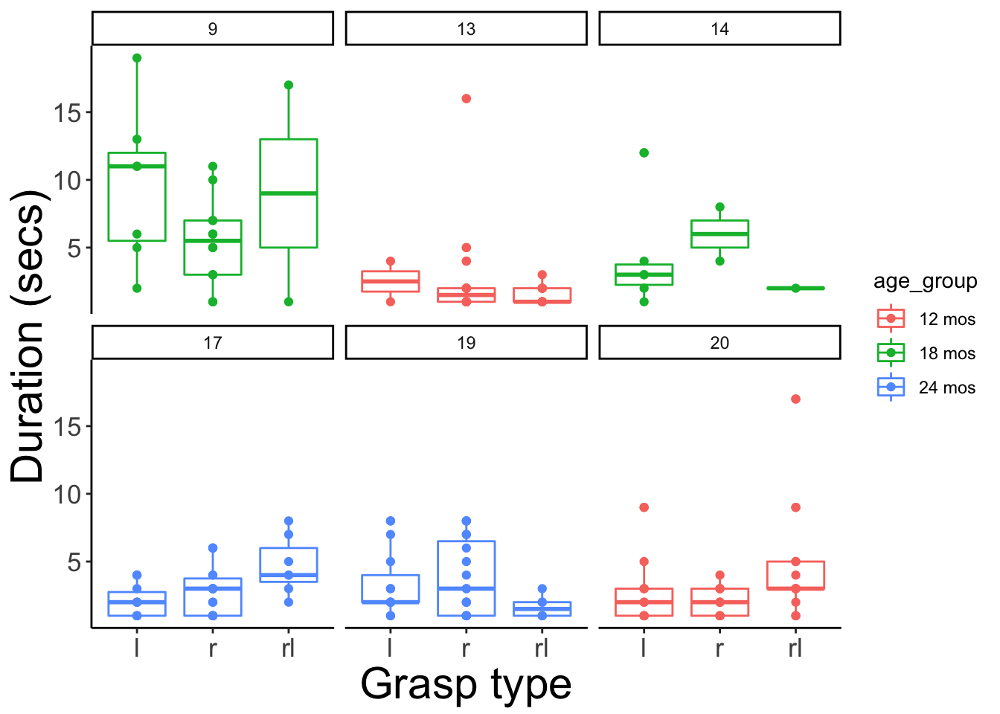
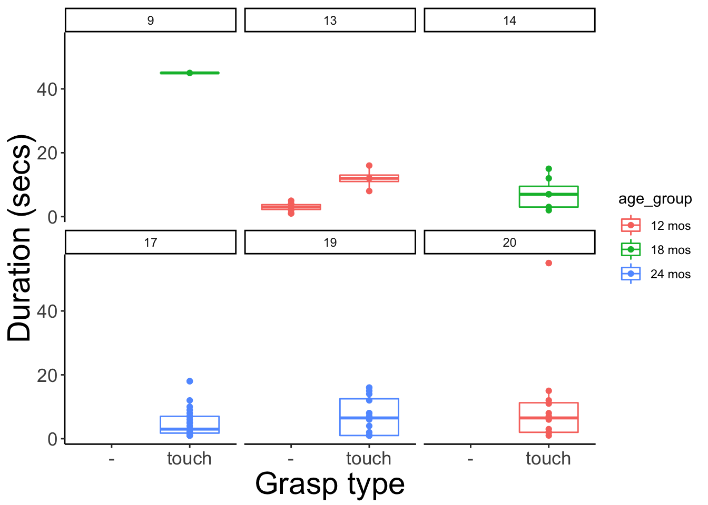
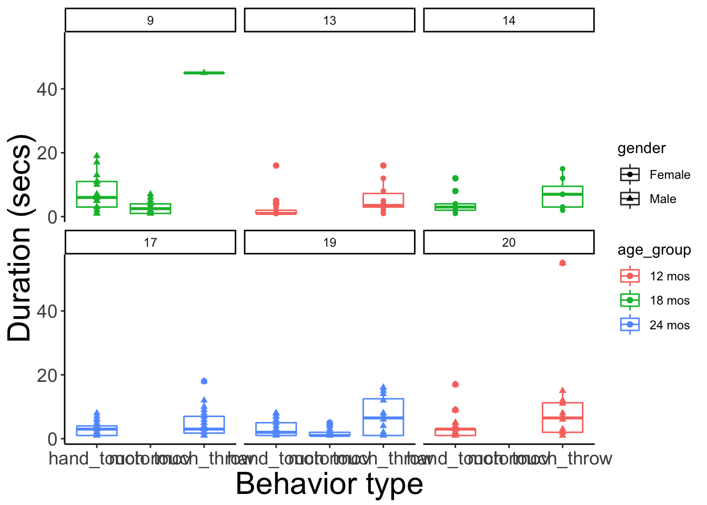

We will define some common graph theme elements here.
my_theme <- theme(axis.text.x = element_text(size = rel(1.5)),
axis.text.y = element_text(size = rel(1.5)),
plot.title = element_text(size = rel(3)),
axis.title = element_text(size = rel(2)),
legend.text = element_text(size = rel(2))) +
theme_classic()12, 18, and 24-mo-olds drawn from
Adolph, K., Tamis-LeMonda, C. & Gilmore, R.O. (2017). PLAY Project: Pilot Data Collections. Databrary. Retrieved March 12, 2019 from https://nyu.databrary.org/volume/444#panel-data.
Download session data (video and Datavyu files) from Databrary.
Process OPF files
The Datavyu (.opf) files are located in ~/Box\ Sync/b-gilmore-lab-group\ Shared/gilmore-lab/pubs/psi-chi/2019/grasp-stack.
Let’s list them.
data_dir <- '~/Box\ Sync/b-gilmore-lab-group\ Shared/gilmore-lab/pubs/psi-chi/2019/grasp-stack'
dv_fl <- list.files(data_dir, pattern = '\\.opf$', full.names = TRUE)
dv_fl## [1] "/Users/rick/Box Sync/b-gilmore-lab-group Shared/gilmore-lab/pubs/psi-chi/2019/grasp-stack/12mos_s13(done).opf"
## [2] "/Users/rick/Box Sync/b-gilmore-lab-group Shared/gilmore-lab/pubs/psi-chi/2019/grasp-stack/12mos_s20(done).opf"
## [3] "/Users/rick/Box Sync/b-gilmore-lab-group Shared/gilmore-lab/pubs/psi-chi/2019/grasp-stack/18mos_s09(done).opf"
## [4] "/Users/rick/Box Sync/b-gilmore-lab-group Shared/gilmore-lab/pubs/psi-chi/2019/grasp-stack/18mos_s14(done).opf"
## [5] "/Users/rick/Box Sync/b-gilmore-lab-group Shared/gilmore-lab/pubs/psi-chi/2019/grasp-stack/24mos_s17(done).opf"
## [6] "/Users/rick/Box Sync/b-gilmore-lab-group Shared/gilmore-lab/pubs/psi-chi/2019/grasp-stack/24mos_s19(done).opf"Extract into subject-specific directories, e.g., /13, etc.
# Extract sub number and reformat
subs <- stringr::str_match(dv_fl, pattern = '_s([0-9]+)')[,2]
subs <- stringr::str_pad(subs, 2, pad='0')
for (i in 1:length(subs)) {
databraryapi::extract_dv(in_dir = data_dir, in_fn = dv_fl[i],
out_dir = paste0('object-play_data/', subs[i]))
}Convert the Datavyu files to CSVs.
fl <- list.files('object-play_data', full.names = TRUE)
csv_list <- unlist(lapply(fl, databraryapi::dv_to_csv))## No Datavyu file found in object-play_data/09## Creating unique filename.## No Datavyu file found in object-play_data/13## Creating unique filename.## No Datavyu file found in object-play_data/14## Creating unique filename.## No Datavyu file found in object-play_data/17## Creating unique filename.## No Datavyu file found in object-play_data/19## Creating unique filename.## No Datavyu file found in object-play_data/20## Creating unique filename.Now we can read the Datavyu files as data frames.
#csvs <- lapply(csv_list, read_csv)
s09 <- read_csv(csv_list[1])## Parsed with column specification:
## cols(
## code = col_character(),
## onset = col_time(format = ""),
## offset = col_time(format = ""),
## code.value = col_character()
## )s13 <- read_csv(csv_list[2])## Parsed with column specification:
## cols(
## code = col_character(),
## onset = col_time(format = ""),
## offset = col_time(format = ""),
## code.value = col_character()
## )s14 <- read_csv(csv_list[3])## Parsed with column specification:
## cols(
## code = col_character(),
## onset = col_time(format = ""),
## offset = col_time(format = ""),
## code.value = col_character()
## )s17 <- read_csv(csv_list[4])## Parsed with column specification:
## cols(
## code = col_character(),
## onset = col_time(format = ""),
## offset = col_time(format = ""),
## code.value = col_character()
## )s19 <- read_csv(csv_list[5])## Parsed with column specification:
## cols(
## code = col_character(),
## onset = col_time(format = ""),
## offset = col_time(format = ""),
## code.value = col_character()
## )s20 <- read_csv(csv_list[6])## Parsed with column specification:
## cols(
## code = col_character(),
## onset = col_time(format = ""),
## offset = col_time(format = ""),
## code.value = col_character()
## )Add duration field and subject fields.
s09 <- s09 %>%
mutate(duration = lubridate::as.period(offset - onset, unit = 'sec')) %>%
filter(duration > 0) %>%
mutate(sub = 's09')
s13 <- s13 %>%
mutate(duration = lubridate::as.period(offset - onset, unit = 'sec')) %>%
filter(duration > 0) %>%
mutate(sub = 's13')
s14 <- s14 %>%
mutate(duration = lubridate::as.period(offset - onset, unit = 'sec')) %>%
filter(duration > 0) %>%
mutate(sub = 's14')
s17 <- s17 %>%
mutate(duration = lubridate::as.period(offset - onset, unit = 'sec')) %>%
filter(duration > 0) %>%
mutate(sub = 's17')
s19 <- s19 %>%
mutate(duration = lubridate::as.period(offset - onset, unit = 'sec')) %>%
filter(duration > 0) %>%
mutate(sub = 's19')
s20 <- s20 %>%
mutate(duration = lubridate::as.period(offset - onset, unit = 'sec')) %>%
filter(duration > 0) %>%
mutate(sub = 's20')data_list <- list(s09, s13, s14, s17, s19, s20)
object_play <- Reduce(function(x,y) merge(x,y, all=TRUE), data_list)
object_play <- object_play %>%
mutate(ID = as.numeric(stringr::str_sub(sub, 2,3))) %>%
select(-sub)login_db(params$db_account)## Login successful.## [1] TRUEvol_444 <- databraryapi::download_session_csv(vol_id = 444)
sub_info <- vol_444 %>%
filter(participant.ID %in% as.numeric(subs)) %>%
select(session_id, participant.ID, participant.gender, participant.race,
participant.ethnicity, participant.gestational.age,
participant.birth.weight, group.name) %>%
rename(ID = participant.ID,
gender = participant.gender, race = participant.race,
ethnicity = participant.ethnicity,
gest_age = participant.gestational.age,
birth_weight = participant.birth.weight,
age_group = group.name)List the unique codes.
unique(object_play$code)## [1] "hand_touch" "motormov" "touch_throw"There are three types of codes, hand_touch, motormov, and touch_throw.
object_merged <- dplyr::left_join(object_play, sub_info, by = c('ID'))If we want to show video excerpts, we need to access the raw videos within each participant session.
# (videos_list <- databraryapi::list_assets_in_session(vol_id = 444, session_id = sub_info[1,]$session_id))
#
# # Select video with '1-Hour' in name field?
# vid <- videos_list %>%
# filter(stringr::str_detect(name, '1\\-Hour'))
#
# No, because in pilot, this name is sometimes in the experimenter view video, too.
# observation.mp4, phone_quest.mp4, home_quest.mp4, dyadic.mp4, house_map.mp4 as better names?
# For this example, I may have to choose asset_id s manually.
vol_ids <- rep(444, n=6)
asset_ids <- c(85471, 85705, 85730, 85812, 85853, 85875)
session_ids <- sub_info['session_id']
make_session_urls <- function(vol_id, session_id, asset_id) {
paste0('https://nyu.databrary.org/slot/', session_id, '/-/asset/', asset_id, '/download?inline=true')
}
for (i in 1:6) {
make_session_urls(vol_ids[i], session_ids$session_id[i], asset_ids[i])
}hand_touch codeobject_merged %>%
filter(code == 'hand_touch') %>%
ggplot() +
aes(x = code.value, y = duration, color = age_group) +
geom_boxplot() +
geom_point() +
facet_wrap(ID ~ .) +
xlab('Grasp type') +
ylab('Duration (secs)') +
my_theme
d <- object_merged %>%
filter(code == 'hand_touch')
xtabs(formula = ~ code.value + ID, data = d) %>%
knitr::kable()| 9 | 13 | 14 | 17 | 19 | 20 | |
|---|---|---|---|---|---|---|
| l | 7 | 2 | 6 | 10 | 11 | 11 |
| r | 12 | 16 | 2 | 18 | 19 | 11 |
| rl | 2 | 11 | 1 | 7 | 6 | 13 |
touch_throw codeobject_merged %>%
filter(code == 'touch_throw') %>%
ggplot() +
aes(x = code.value, y = duration, color = age_group) +
geom_boxplot() +
geom_point() +
facet_wrap(ID ~ .) +
xlab('Grasp type') +
ylab('Duration (secs)') +
my_theme## Warning: Removed 1 rows containing non-finite values (stat_boxplot).## Warning: Removed 1 rows containing missing values (geom_point).
d <- object_merged %>%
filter(code == 'touch_throw')
xtabs(formula = ~ code.value + ID, data = d) %>%
knitr::kable()| 9 | 13 | 14 | 17 | 19 | 20 | |
|---|---|---|---|---|---|---|
| - | 0 | 10 | 0 | 0 | 0 | 0 |
| touch | 2 | 4 | 7 | 24 | 16 | 12 |
object_merged %>%
ggplot() +
aes(x = code, y = duration, color = age_group, shape = gender) +
geom_boxplot() +
geom_point() +
facet_wrap(ID ~ .) +
xlab('Behavior type') +
ylab('Duration (secs)') +
my_theme## Warning: Removed 1 rows containing non-finite values (stat_boxplot).## Warning: Removed 1 rows containing missing values (geom_point).
xtabs(formula = ~ code + ID, data = object_play) %>%
knitr::kable()| 9 | 13 | 14 | 17 | 19 | 20 | |
|---|---|---|---|---|---|---|
| hand_touch | 21 | 29 | 9 | 35 | 36 | 35 |
| motormov | 16 | 0 | 0 | 0 | 21 | 0 |
| touch_throw | 2 | 14 | 7 | 24 | 16 | 12 |
Note that the figure(s) are located in object-play_files/figure-html/.
Note: These links will open only for authorized Databrary investigators or affiliates who have permission to access the relevant files. They are provided here for transparency.
url <- make_session_urls(vol_ids[1], session_ids$session_id[1], asset_ids[1])
write_video_clip_html(url)https://nyu.databrary.org/slot/18813/-/asset/85471/download?inline=true
url <- make_session_urls(vol_ids[2], session_ids$session_id[2], asset_ids[2])
write_video_clip_html(url)https://nyu.databrary.org/slot/18818/-/asset/85705/download?inline=true
url <- make_session_urls(vol_ids[3], session_ids$session_id[3], asset_ids[3])
write_video_clip_html(url)https://nyu.databrary.org/slot/18819/-/asset/85730/download?inline=true
url <- make_session_urls(vol_ids[4], session_ids$session_id[4], asset_ids[4])
write_video_clip_html(url)https://nyu.databrary.org/slot/18823/-/asset/85812/download?inline=true
url <- make_session_urls(vol_ids[5], session_ids$session_id[5], asset_ids[5])
write_video_clip_html(url)https://nyu.databrary.org/slot/18825/-/asset/85853/download?inline=true
url <- make_session_urls(vol_ids[6], session_ids$session_id[6], asset_ids[6])
write_video_clip_html(url)https://nyu.databrary.org/slot/18826/-/asset/85875/download?inline=true